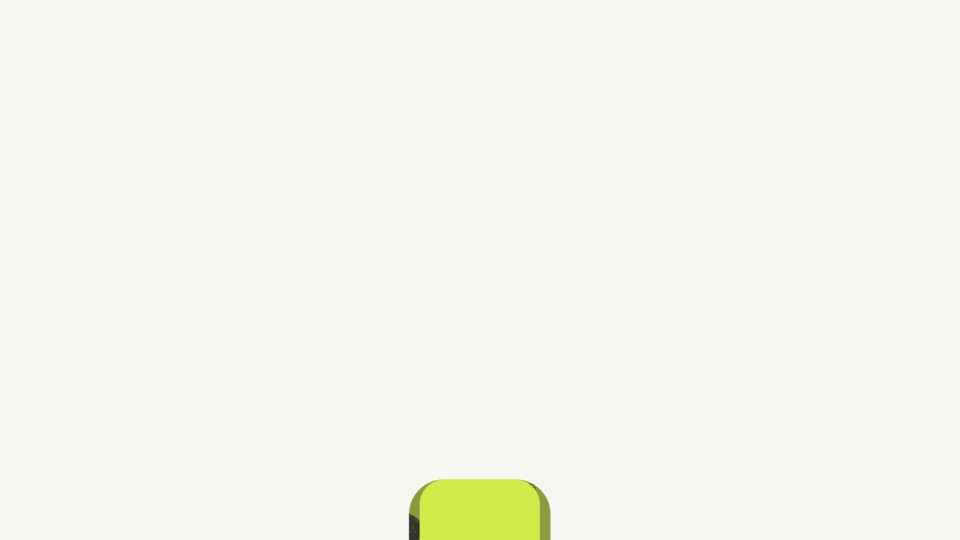
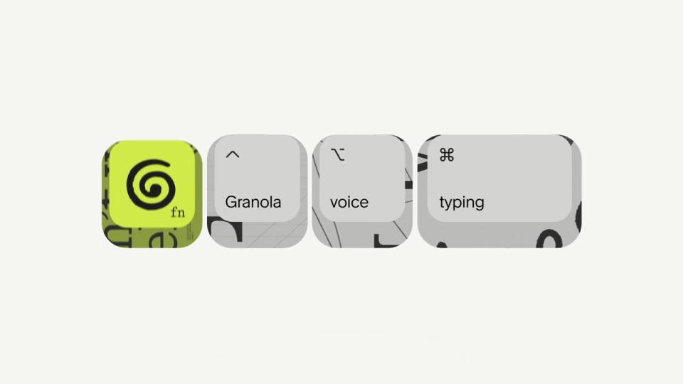
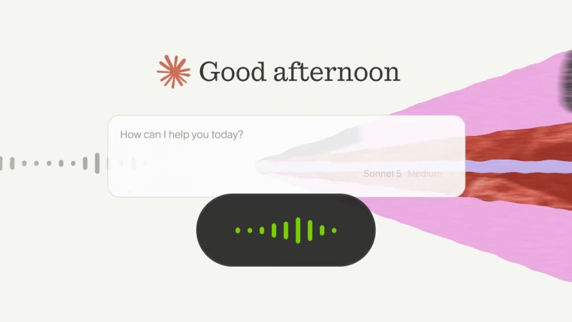
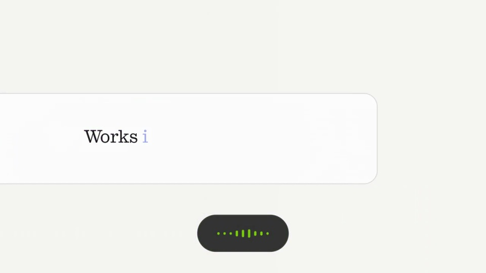
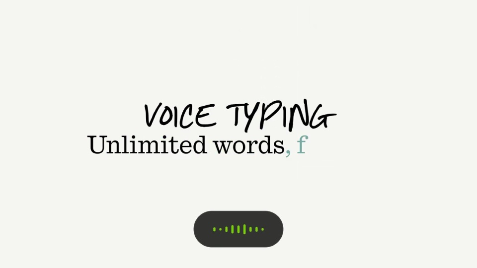

Granola / V137
免费语音输入
标志键帽与文字键帽落下排成一行，再向两边散开，露出发光的黑色声波胶囊。胶囊成为后续演示的共同锚点。
构图与编排 可播放 · 可替换内容
整体编排规则示例
查看 HTML 源码
<!doctype html><html lang="zh-CN"><meta charset="utf-8"><meta name="viewport" content="width=device-width,initial-scale=1"><title>免费语音输入 · sequence</title><style>html,body{margin:0;width:100%;height:100%;overflow:hidden;background:#f5f5ee}canvas{display:block;width:100%;height:100%;object-fit:contain}</style><body data-mode="sequence"><canvas width="1000" height="600"></canvas><script src="data.js"></script><script src="common.js"></script><script src="scene.js"></script><script src="bridge.js"></script></body></html>画面元素功能键帽录音胶囊动态声波文本输入应用图标品牌
MOTION LANGUAGE
动作与构图
局部动作 · 构图规则
01
先把键盘动作变成语音状态
先把键盘动作变成语音状态规则示例
查看 HTML 源码
<!doctype html><html lang="zh-CN"><meta charset="utf-8"><meta name="viewport" content="width=device-width,initial-scale=1"><title>免费语音输入 · sequence</title><style>html,body{margin:0;width:100%;height:100%;overflow:hidden;background:#f5f5ee}canvas{display:block;width:100%;height:100%;object-fit:contain}</style><body data-mode="clip" data-start="0" data-end="4.5"><canvas width="1000" height="600"></canvas><script src="data.js"></script><script src="common.js"></script><script src="scene.js"></script><script src="bridge.js"></script></body></html>标志键帽与文字键帽落下排成一行，再向两边散开，露出发光的黑色声波胶囊。胶囊成为后续演示的共同锚点。
02
声波跳动的同时文字落进输入区
应用界面从后方出现，声波沿底部流动，输入框内逐步生成句子。保持输入框与录音状态同时可见。
03
收束时让功能名和价格可读
手写 VOICE TYPING 在上，衬线说明 Unlimited words, for free. 在下，胶囊停在底部。最后用整屏酸绿收品牌。
SEQUENCE
段落与节奏
点击段落，定位到上方编排示意。





画面参考 · 离散静帧
KEEP THE RELATIONSHIPS
制作其他主题
- 替换语音服务与应用例子，保留按键、录音、落字的逻辑。
制作约束
功能键帽 / 录音胶囊 / 动态声波 / 文本输入 / 应用图标 / 品牌
- 标志键帽与文字键帽落下排成一行，再向两边散开，露出发光的黑色声波胶囊。胶囊成为后续演示的共同锚点。
- 应用界面从后方出现，声波沿底部流动，输入框内逐步生成句子。保持输入框与录音状态同时可见。
- 手写 VOICE TYPING 在上，衬线说明 Unlimited words, for free. 在下，胶囊停在底部。最后用整屏酸绿收品牌。